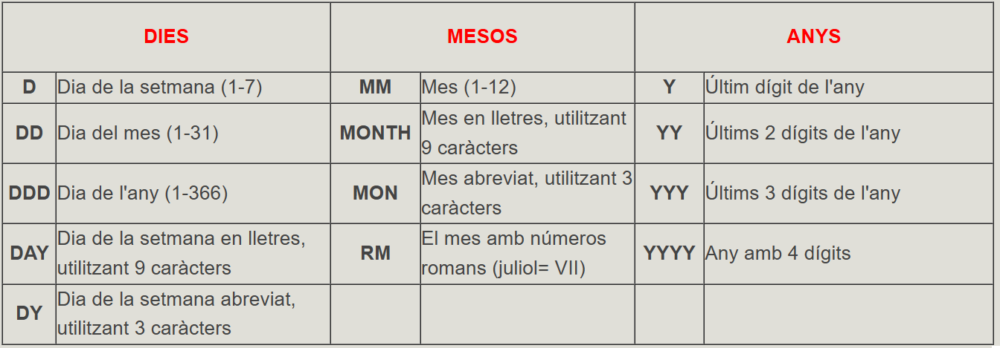
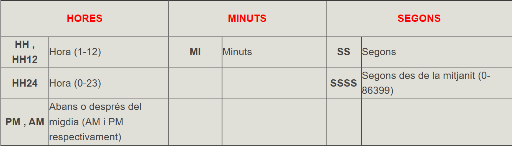
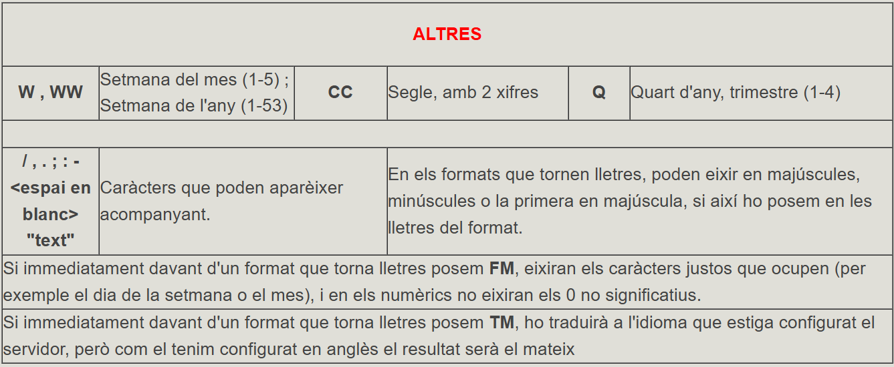
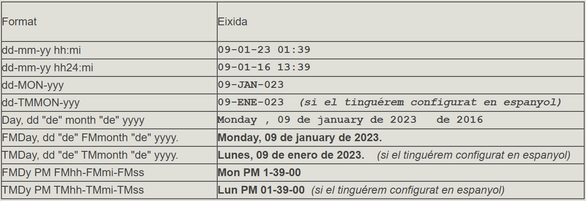

4.2 Funcions
Com veurem un poc més avant, en les sentències SQL, a banda de columnes i valors constants, podrem utilitzar funcions.
PostgreSQL té moltes funcions ja creades.
Farem un recull de les funcions més importants de PostgreSQL, d'entre la multitud de funcions que existeixen. Les agruparem per categories.
Evidentment aquest recull no és per aprendre'l de memòria, sinó que servirà de consulta.
Funcions numèriques
| Funció | Explicació | Funció | Explicació |
|---|---|---|---|
| ABS(n) | Valor absolut de n. | LOG(m,n) | Logaritme, base m, de n |
| ACOS(n) | Arccosinus de n (invers del cosinus) | MOD(m,n) | La resta de la divisió entre m i n |
| ASIN(n) | Arcsinus de n (invers de sinus) | POWER(m,n) | m elevat a n |
| ATAN(n) | Arctangent de n (invers de la tangent) | RANDOM() | número aleatori entre 0 i 1 |
| CEIL(n) | Enter immediatament superior o igual a n | Round(n,[m]) | n arrodonit a m xifres decimals (per defecte 0) |
| COS(n) | Cosinus de n. | SIN(n) | Sinus de n |
| EXP(n) | Exponencial de n (en) | SQRT(n) | Arrel quadrada de n |
| FLOOR(n) | Enter immediatament inferior o igual a n | TAN(n) | Tangent de n |
| LN(n) | Logaritme neperià de n | Trunc(n,[m]) | n truncat a m xifres decimals (per defecte 0) |
Per exemple, podríem simular el llançament d'un dau d'aquesta manera:
SELECT TRUNC(RANDOM()*6+1);
Funcions de caràcters
| Funció | Explicació |
|---|---|
| ASCII(c) | Torna el codi ASCII corresponent al caràcter c |
| REPLACE(c1,c2,c3) | Reemplaça en c1 cada ocurrència de c2 per c3 |
| CHR(n) | Torna el caràcter amb codi ASCII n. |
| RPAD(c1,n[c2]) | Torna c1 reomplida per la dreta fins n caràcters amb la cadena c2 |
| CONCAT(c1,c2) | Concatena les dues cadenes (equivalent a l'operador |
| INITCAP(c1) | Torna la cadena amb la primera lletra de cada paraula en majúscules, i les altres en minúscules |
| STRPOS(s,s1) | Busca la primera ocurrència de la subcadena s1 dins de la cadena s |
| LENGTH(c1) | Llargària de la cadena. Si c1 és de tipus CHAR, inclourà tots els espais en blanc del final. |
| SUBSTR(c1,m[,n]) | Torna una subcadena de c1 que comença en el caràcter m i consta de n caràcters (per defecte fins el final) |
| LPAD(c1,n[c2]) | Torna c1 reomplida per l’esquerra fins n caràcters amb la cadena c2 |
| TRANSLATE(c1,c2,c3) | Torna c1 amb cada caràcter de c2 substituït pel corresponent (en ordre) de c3. |
| LTRIM(c1[,set]) | Retalla per l’esquerra mentre troba la cadena set (per defecte blancs) |
| LOWER(c1) | Torna la cadena en minúscules |
| UPPER(c1) | Torna la cadena en majúscules |
Per exemple, traurem els graus de la latitud de les poblacions. Haurem d'agafar els 2 primers caràcters (els de l'esquerra).
SELECT nom , latitud , SUBSTR(latitud,1,2)
FROM POBLACIONS;
SELECT nom , latitud , SUBSTR(latitud,1,STRPOS(latitud,'º')-1)
FROM POBLACIONS;
SELECT nom , latitud , SUBSTR(latitud,4,2)
FROM POBLACIONS;
SELECT nom , latitud ,
SUBSTR(latitud,STRPOS(latitud,'º')+1,STRPOS(latitud,'''')-STRPOS(latitud,'º')-1)
FROM POBLACIONS;
Aquesta sentència resumeix l'anterior, separant graus, minuts i segons.
SELECT nom, latitud,
SUBSTR(latitud,1,STRPOS(latitud,'º')-1),
SUBSTR(latitud,STRPOS(latitud,'º')+1,STRPOS(latitud,'''')-STRPOS(latitud,'º')-1),
SUBSTR(latitud,STRPOS(latitud,'''')+1,STRPOS(latitud,'"')-STRPOS(latitud,'''')-1)
FROM POBLACIONS;
Funcions de data
| Funció | Explicació |
|---|---|
| NOW() (CURRENT_TIMESTAMP) | Torna la data-hora actual, amb la diferència d'hores respecte la GMT |
| LOCALTIMESTAMP | Igual que l'anterior, però sense la diferència de la GMT |
| CURRENT_DATE | Torna la data actual |
| CURRENT_TIME | Torna l'hora actual (amb diferència GMT) |
| LOCALTIME | Torna l'hora actual (sense diferència GMT) |
| AGE(t) | Torna la diferència de la data actual i t |
| AGE(t1,t2) | Torna la diferència entre t1 (posterior) i t2 (anterior) |
| EXTRACT(camp FROM t) | Trau el número corresponent al camp (que pot ser year, month, day, hour, minute, second, millisecond, microsecond, dow (day of week), ... |
Per exemple, ¿quan de temps ha passat des de l'intent de cop d'estat?
SELECT AGE('1981/02/23'::DATE);
SELECT EXTRACT(year FROM CURRENT_DATE);
| Funció | Explicació | Funció | Explicació |
|---|---|---|---|
| AREA(o) | Àrea de l'objecte | HEIGTH(r) | Altura del rectàngle |
| CENTER(o) | Centre de l'objecte | RADIUS(c) | Radi del cercle |
| DIAMETER(c) | Diàmetre del cercle | WIDTH(r) | Amplària del rectàngle |
Per exemple, l'àrea d'un cercle:
SELECT AREA('((5,5),2)'::CIRCLE);
Funcions
| Funció | Explicació | Exemple | Resultat |
|---|---|---|---|
| HOST(ip) | Trau en format text l'adreça IP | HOST('192.168.2.15/24') | 192.168.2.15 |
| MASKLEN(ip) | Trau el número de bits de la màscara | MASKLEN('192.168.2.15/24') | 24 |
| SET_MASKLEN(ip,n) | Posa el número de bits de la màscara als especificats | SET_MASKLEN('192.168.2.15/24',16) | 192.168.2.15/16 |
| NETMASK(ip) | Construeix la màscara de xarxa | NETMASK('192.168.2.15/24') | 255.255.255.0 |
Funcions de conversió
Serviran per a passar d'un tipus a un altre, on un d'ells serà el tipus de cadena (VARCHAR)
| Funció | Explicació |
|---|---|
| TO_CHAR(data, format) | Converteix una data en una tira de caràcters, utilitzant el format especificat (es veurà aquest format en la següent pregunta) |
| TO_CHAR(número, format) | Converteix un número en una tira de caràcters |
| TO_NUMBER(exp., format) | Converteix una tira de caràcters en un número, suposant que estava en el format indicat |
| TO_DATE(exp., format) | Converteix una tira de caràcters en un data |
| TO_DATETIME(exp., format) | converteix una tira de caràcters en un data-hora |
4.2.1 Formats de les dates
Aquest tipus és molt versàtil en quant al format, bé siga per a la introducció de les dades, o el que és més habitual, per a la seua presentació. S'haurà d'utilitzar una funció, TO_CHAR , que acceptarà 2 paràmetres: el primer la data que es vol presentar, i el segon el format que volem. En el format indicarem per mig de determinats caràcters l'aspecte que volem. Per exemple, per a traure la data d'avui amb el format dia-mes-any, posaríem:
SELECT TO_CHAR( NOW(), 'DD-MM-YYYY');

En principi els formats que tornen lletres ho estaran en anglès, però després veurem com canviar d'idioma.


Exemples:
Si ara fóra 9/1/16 13:39 (en el servidor, no en la vostra màquina), i férem SELECT TO_CHAR(NOW(),'format');
| Format | Eixida |
|---|---|
| dd-mm-yy hh:mi | 09-01-23 01:39 |
| dd-mm-yy hh24:mi | 09-01-16 13:39 |
| dd-MON-yyy | 09-JAN-023 |
| dd-TMMON-yyy | 09-ENE-023 (si el tinguérem configurat en espanyol) |
| Day, dd "de" month "de" yyyy | Monday , 09 de january de 2023 de 2016 |
| FMDay, dd "de" FMmonth "de" yyyy. | Monday, 09 de january de 2023. |
| TMDay, dd "de" TMmonth "de" yyyy. | Lunes, 09 de enero de 2023.(si el tinguérem configurat en espanyol) |
| FMDy PM FMhh-FMmi-FMss | Mon PM 1-39-00 |
| TMDy PM TMhh-TMmi-TMss | Lun PM 01-39-00 __(si el tinguérem configurat en espanyol) |
4.2.2 Formats dels números
També podrem utilitzar la funció TO_CHAR per a donar l'aspecte que vulguem als números. En la següent taula tenim un resum amb els diferents símbols, un comentari descriptiu de cada símbol, i un exemple de format amb el resultat que donaria per a un determinat valor. La sentència seria SELECT TO_CHAR(valor,'format'); :

Llicenciat sota la Llicència Creative Commons Reconeixement NoComercial CompartirIgual 3.0